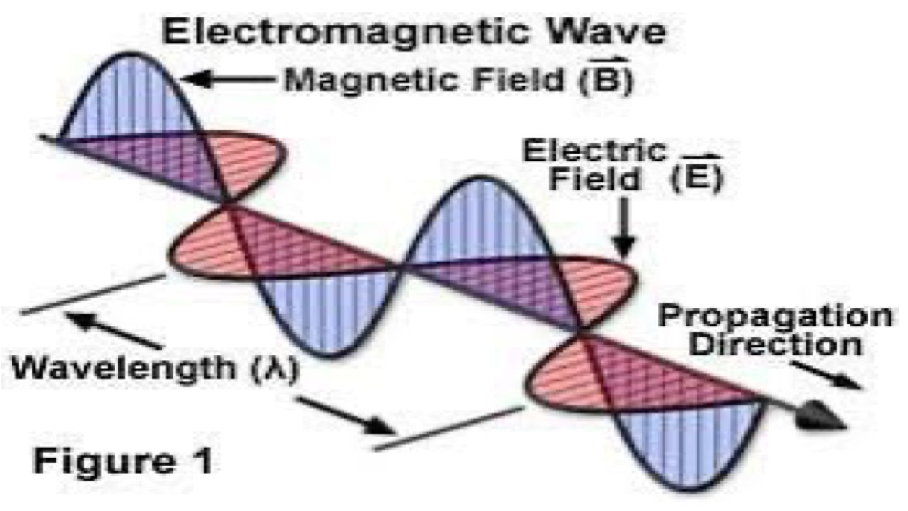
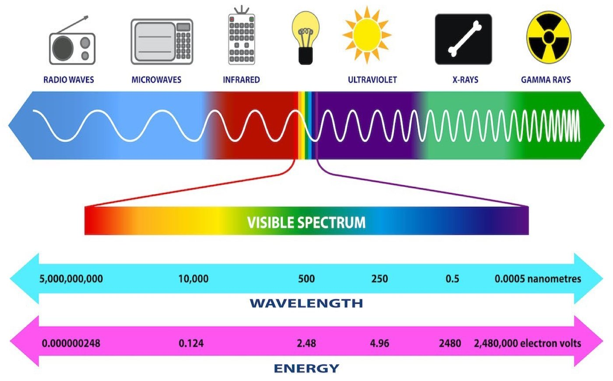
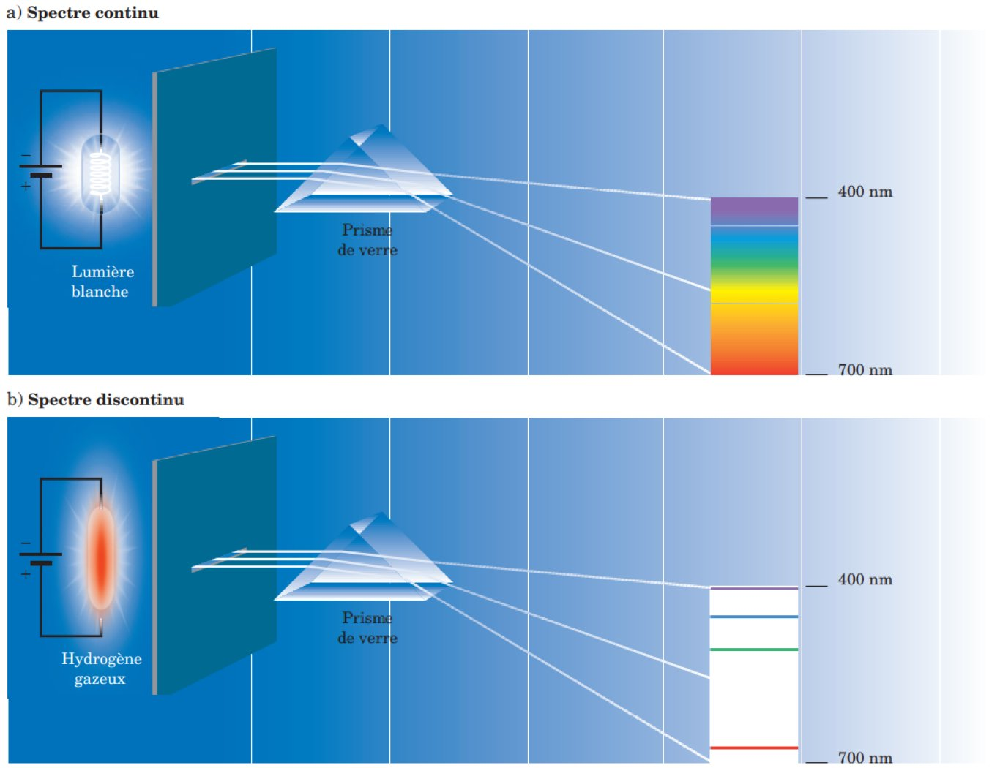
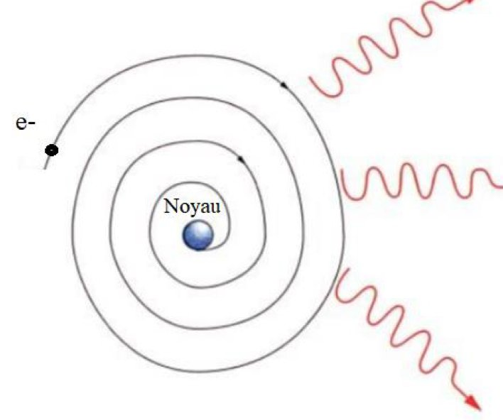
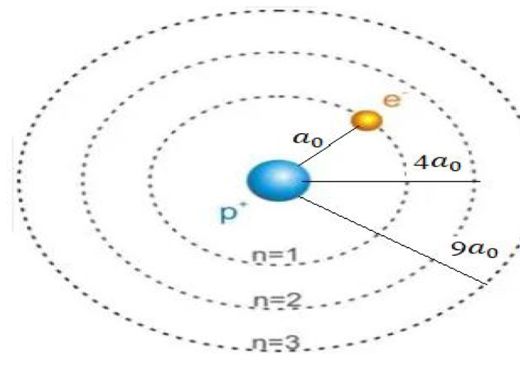
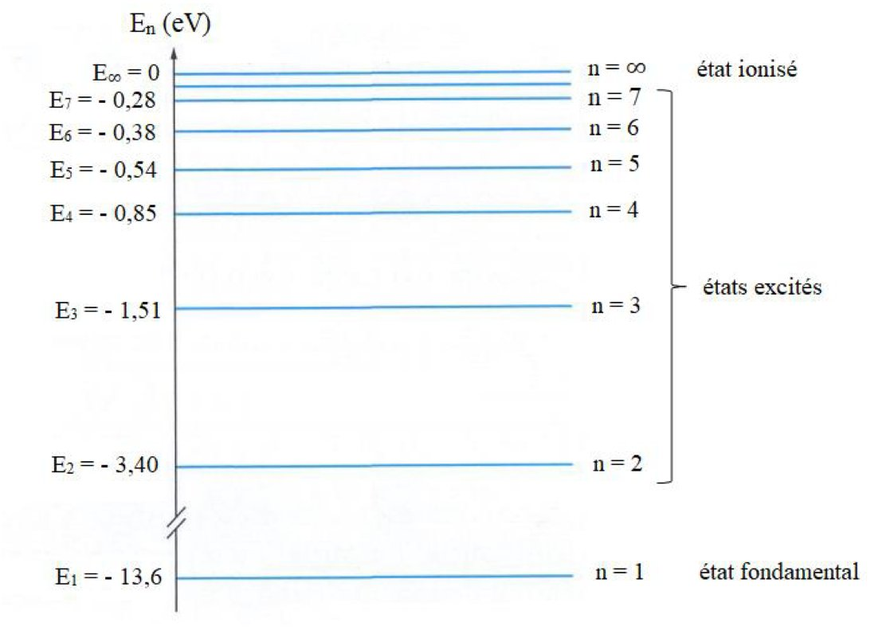

S1 · Chemistry · Summary
Light and the Bohr atom
- Essentials
- Wave nature
- Photon
- De Broglie
- Spectra
- Bohr's model
- Radius & speed
- Energy levels
- Exam method
- Exam traps
- Self-check
If you remember only this
- Photon energy: E = hν = hc/λ, with h = 6.62×10⁻³⁴ J·s and c = 3×10⁸ m/s. Short wavelength = high frequency = high energy. Convert λ to metres first.
- De Broglie: any moving particle has a wave of wavelength λ = h/mv. On an orbit, 2πr = nλ.
- Hydrogen levels: Eₙ = −13.6/n² eV. So −13.6, −3.40, −1.51, −0.85, −0.54… and E∞ = 0 (ionized state). E₁ = −13.6 eV = −21.76×10⁻¹⁹ J.
- Transition (Bohr's 3rd postulate): ΔE = |En₁ − En₂| = hν. Going up absorbs, going down emits. Only a photon matching a gap between levels does this.
- Orbits are quantized: rₙ = a₀n² (a₀ = 0.53 Å) and vₙ = v₀/n (v₀ = 2.18×10⁶ m/s).
- Quantized angular momentum: mvr = nh/2π.
- Spectra: white light gives a continuous spectrum; a discharge in a low-pressure gas (hydrogen, sodium or mercury lamp) gives a line (discrete) spectrum.
II.1. Introduction p. 1
- Sunlight looks white, but when it is separated, all the colours of the rainbow appear.
- To describe how electrons are arranged around the nucleus, we must analyse the light absorbed and emitted by atoms. That is why this chapter starts with the nature of light.
II.2. The wave nature of light p. 2–5 2022-23
II.2.1. Electromagnetic waves
- An electromagnetic wave has an electric field E and a magnetic field B oscillating at the same frequency ν.
- E and B are perpendicular to each other and propagate in orthogonal directions.
- The speed depends on the medium. In a vacuum, c = 3×10⁸ m/s.

| Quantity | Definition | Formula | Unit |
|---|---|---|---|
| Wavelength λ | Length of one cycle: the distance between two successive peaks | — | m, or nm (10⁻⁹ m), µm (10⁻⁶ m), cm (10⁻² m) |
| Period T | Time for the wave to complete one cycle | — | s |
| Frequency ν | Number of cycles per unit of time; the inverse of the period | ν = 1/T = c/λ | Hz |
| Wave number | The inverse of the wavelength | 1/λ | nm⁻¹, cm⁻¹, m⁻¹ |
II.2.2. The electromagnetic spectrum p. 4–5
- The range runs from gamma rays (very short wavelengths, high frequencies, from the decay of radioactive substances) to waves with very long wavelengths and very low frequencies emitted by power lines.
- The spectrum is largely invisible: only a narrow portion, roughly in the middle, can be seen.
- Visible: about 390 nm (violet, just after the ultraviolet) to about 760 nm (red, merging into the infrared).
Gamma rays→X-rays→Ultraviolet→Visible→Infrared→Microwaves→Radio waves

II.3. The particle nature of light p. 6 Every year, 2018-19 → 2025-26
- Each colour of white light corresponds to a specific energy, frequency and wavelength.
- Light can be viewed as a collection of particles, each carrying a quantum of energy called a photon, whose energy is proportional to its frequency.
Formula
E = hν = hc/λ
E: energy in joules · h = 6.62×10⁻³⁴ J·s (Planck's constant) · ν in s⁻¹ or Hz · λ in metres
E: energy in joules · h = 6.62×10⁻³⁴ J·s (Planck's constant) · ν in s⁻¹ or Hz · λ in metres
Memory trick (no calculator)
hc/e = (6.62×10⁻³⁴ × 3×10⁸) / (1.6×10⁻¹⁹) ≈ 1240 eV·nm, so λ (nm) ≈ 1240 / E (eV). Check against the figure on p. 5: 1240/500 ≈ 2.48 eV. 1 eV = 1.6×10⁻¹⁹ J follows from the lesson's −21.76×10⁻¹⁹ J = −13.6 eV.
Wave-particle duality: De Broglie's relation p. 7 2017-18 · 2024-25
- Planck and Einstein had shown the dual nature (wave and particle) of light.
- 1925, Louis de Broglie: a guiding wave can be associated with any moving material particle of mass m and velocity v:
Formulas
λ = h/mv · between the frequency of the wave and the energy of the particle: E = hν
Standing wave of the electron: 2πr = nλ = nh/mv. The total length of the orbit is an integer multiple of the De Broglie wavelength.
Standing wave of the electron: 2πr = nλ = nh/mv. The total length of the orbit is an integer multiple of the De Broglie wavelength.
λ is inversely proportional to both mass and speed: doubling v halves λ.
II.4. Emission spectrum of the hydrogen atom p. 8–9
- A transparent prism separates radiation into its characteristic wavelengths, forming a spectrum. The instrument is a spectroscope.
- Visible region: read directly on a graduated scale. UV or infrared regions: wavelengths are detected electronically.
| Source | Spectrum |
|---|---|
| White light: sunlight, incandescent solids (tungsten bulbs) | Continuous |
| Electrical discharge in a low-pressure gas: hydrogen, fluorescent tube, sodium or mercury lamp | Discrete, or line, spectrum |

II.5. Bohr's atomic model: the hydrogen atom p. 10–11 2023-24
The problem with Rutherford's model (1911)
Electrons orbit a dense nucleus, like planets→the electron should emit radiation→it loses energy→it spirals in and falls into the nucleus
This is a contradiction: the electron does not fall, since the atom actually exists.

Bohr's answer (1913): quantization of energy, in 3 postulates p. 11
| Postulate | What it says |
|---|---|
| 1st | The electron moves around the nucleus in stationary circular orbits, of constant energy. |
| 2nd | Allowed orbits are those where the angular momentum mvr is an integer multiple of h/2π (the quantum unit): mvr = nh/2π. n = principal quantum number. |
| 3rd | Moving between stationary orbits, the electron absorbs or emits radiation hν such that ΔE = |En₁ − En₂| = hν. |
II.5.1. Radius and speed on a stationary orbit p. 13–15
For a stable orbit, the centrifugal force exactly balances the attraction between the electron and the nucleus.
- Forces: Fc = mv²/r and Fa = k(−e)(+e)/r² = −ke²/r², with k = 9×10⁹ (MKSA).
- Equal magnitudes: mv²/r = ke²/r², so mv² = ke²/r (1).
- 2nd postulate: mvr = nh/2π, so mv² = n²h²/(4π²r²m) (2).
- Combining (1) and (2): r = n² · h²/(4kπ²me²).
| Radius | Speed | |
|---|---|---|
| Law | rₙ = a₀n² | vₙ = v₀/n (from v = nh/2πmr with r = a₀n²) |
| First orbit | a₀ = h²/(4kπ²me²) = 0.53 Å (1 Å = 10⁻¹⁰ m), the radius of the first Bohr orbit | v₀ = h/(2πm a₀) = 2.18×10⁶ m/s |
| n grows | Grows as n²: a₀, 4a₀, 9a₀… | Falls as 1/n |

II.5.2. Energy of the electron on a stationary orbit p. 15–18 7 years, 2018-19 → 2025-26
Total energy = kinetic energy + potential energy.
| Energy | Expression |
|---|---|
| Potential | Ep = −Ke²/r |
| Kinetic | Ec = mₑv²/2 = Ke²/2r (using mₑv² = Ke²/r) |
| Total | E_T = −Ke²/r + Ke²/2r = −Ke²/2r |
| Constant | K = 1/4πε₀, with ε₀ = 8.85×10⁻¹² C²N⁻¹m⁻² (permittivity of vacuum) |
Substituting r = n²h²/(4Kmₑπ²e²) gives the quantized energy:
Result
E_T = −(2K²π²mₑe⁴/h²) · 1/n²
Ground state of hydrogen: E₁ = −2K²π²mₑe⁴/h² = −21.76×10⁻¹⁹ J = −13.6 eV. So Eₙ = E₁/n².
Ground state of hydrogen: E₁ = −2K²π²mₑe⁴/h² = −21.76×10⁻¹⁹ J = −13.6 eV. So Eₙ = E₁/n².
| n | Eₙ (eV) | State |
|---|---|---|
| 1 | −13.6 | Ground state |
| 2 | −3.40 | Excited |
| 3 | −1.51 | Excited |
| 4 | −0.85 | Excited |
| 5 | −0.54 | Excited |
| 6 | −0.38 | Excited |
| 7 | −0.28 | Excited |
| ∞ | 0 | Ionized state |

How exams use this Asked every year since 2018-19
Which level does the electron reach?
- Convert any wavelength to energy: E ≈ 1240/λ. For λ₁ = 97.28 nm, E ≈ 12.75 eV.
- Absorption: add to the starting level. −13.6 + 12.75 = −0.85 eV, so n = 4.
- Emission: subtract. For λ₂ = 1879 nm, E ≈ 0.66 eV, and −0.85 − 0.66 = −1.51 eV, so n = 3.
| Exam question | What to do | Asked |
|---|---|---|
| Energy to reach a level | Subtract levels: n = 1 → 2 is 10.2 eV; n = 1 → 3 is 12.09 eV; n = 1 → 4 is 12.75 eV; n = 1 → 5 is 13.06 eV | 2018-19 · 2019-20 · 2024-25 · 2025-26 |
| Energy to ionize | E∞ − Eₙ = |Eₙ|. From n = 2 it is 3.40 eV, not 13.6 | 2018-19 |
| Ground level from the ionization energy | E₁ = −(ionization energy), because E∞ = 0. Helium: 24.6 eV gives −24.6 eV | 2021-22 · 2022-23 |
| Wavelength from ΔE | λ = hc/ΔE. n = 2 → 1: about 122 nm; n = 3 → 2: about 657 nm | 2018-19 · 2019-20 · 2021-22 · 2022-23 · 2024-25 |
| ΔE from a wavelength | E = hc/λ, converting Å or nm first | 2020-21 · 2023-24 · 2025-26 |
| Frequency of a transition | ν = ΔE/h. n = 6 → 2: 3.02 eV gives 7.3×10¹⁴ s⁻¹ | 2022-23 |
| De Broglie wavelength or speed | λ = h/mv, so v = h/mλ. From a kinetic energy, use Ec = mv²/2 to find v first | 2017-18 · 2024-25 |
| Number of lines down to the ground state | Count the pairs of levels. From n = 4: 3 + 2 + 1 = 6 | 2025-26 |
Exam topics this lesson does not cover
Exam questions on the same theme also use named line series, the formula with R_H, and hydrogen-like ions (He⁺, Li²⁺, Be³⁺). They need material outside these 18 pages, so they are not linked to this lesson.
Exam traps
False statements and tempting wrong answers
- "The ground level of helium (ionization energy 24.6 eV) is +24.6 eV": false, it is −24.6 eV. 2 years
- "Reaching the first excited state from the ground state takes 3.4 eV": false. 3.4 eV is the size of E₂, and the gap from n = 1 is 10.2 eV. 2018-19
- "An electron with 12.1 eV can excite hydrogen to n = 2 and n = 4": false. n = 4 needs 12.75 eV; only n = 2 and n = 3 are reachable. 2024-25
- "From n = 4 to the ground state, 4 lines (or 1, or 9)": false, it is 6. 2025-26
- "The frequency of a transition is not the same for absorption and emission": false, ΔE is the same both ways. 2022-23
- "An infinite energy is needed to bring an electron to n = ∞": false. From the ground state of hydrogen it takes 13.6 eV. 2022-23
- "In Bohr's model the electron is located on a single orbit": false, there are several allowed orbits. 2023-24
- Wrong powers of ten: exams offer answers such as 7.31×10⁴ s⁻¹ instead of 7.31×10¹⁴ s⁻¹, or a sodium line at 9.43×10⁻²⁶ m. Check the order of magnitude. 2019-20 · 2022-23
Typos in the PDF
Some formulas in the slides are mistyped. The correct forms are the ones used on this page:
- p. 6: "E = hcλ" means E = hc/λ.
- p. 11: "mvr = nh2π" means mvr = nh/2π.
- p. 14: "rn = a0n2" means rₙ = a₀n², and "a₀ = h/24kπ²me²" means a₀ = h²/4kπ²me².
- p. 15: "vn = v0n" means vₙ = v₀/n, and "v₀ = h²/πm a₀" should be v₀ = h/2πm a₀, as the derivation just above it shows.
- p. 16: the top line shows Ec with a minus sign. Kinetic energy is positive: Ec = Ke²/2r, as on the same page.
Self-check
Define wavelength, period, frequency and wave number.
λ: distance between two successive peaks. T: time for one cycle. ν: number of cycles per unit of time, ν = 1/T = c/λ, in Hz. Wave number: 1/λ.
What are the limits of the visible spectrum, and what lies beyond each end?
About 390 nm (violet), beyond which is the ultraviolet, to about 760 nm (red), beyond which is the infrared.
Which has more energy, a violet photon or a red photon? Why?
Violet: it has the shorter wavelength and so the higher frequency, and E = hν = hc/λ.
A photon has E = 3.10 eV. What is its wavelength, and is it visible?
λ ≈ 1240/3.10 = 400 nm, which is visible (violet end).
Give De Broglie's relation and the standing-wave condition on an orbit.
λ = h/mv and 2πr = nλ = nh/mv.
Which sources give a continuous spectrum, and which a line spectrum?
Continuous: white light (sunlight, tungsten bulbs). Line: electrical discharge in a low-pressure gas (hydrogen, fluorescent tube, sodium or mercury lamp).
Why does Rutherford's model contradict the existence of the atom?
The orbiting electron should radiate, lose energy and fall into the nucleus, but atoms exist.
State Bohr's 3 postulates.
1. Stationary circular orbits of constant energy. 2. mvr = nh/2π. 3. A transition absorbs or emits radiation with ΔE = |En₁ − En₂| = hν.
What are the radius and speed on n = 3 of hydrogen?
r₃ = 9 × 0.53 = 4.77 Å. v₃ = 2.18×10⁶ / 3 ≈ 7.3×10⁵ m/s.
Express Ep, Ec and E_T in terms of K, e and r.
Ep = −Ke²/r. Ec = Ke²/2r. E_T = −Ke²/2r.
Give the hydrogen levels for n = 1, 2, 3, 4 and ∞.
−13.6, −3.40, −1.51, −0.85 and 0 eV.
A ground-state hydrogen atom absorbs 12.09 eV. Which level does it reach? It then emits 657.7 nm. Where does it land?
−13.6 + 12.09 = −1.51 eV, so n = 3. Then 1240/657.7 ≈ 1.89 eV and −1.51 − 1.89 = −3.40 eV, so n = 2.
Can a ground-state hydrogen atom absorb an 11 eV photon?
No. −13.6 + 11 = −2.6 eV is not a level, and ΔE must equal a gap between levels.
What is the smallest energy to ionize hydrogen from n = 2? From n = 1?
3.40 eV from n = 2 and 13.6 eV from n = 1, since E∞ = 0.